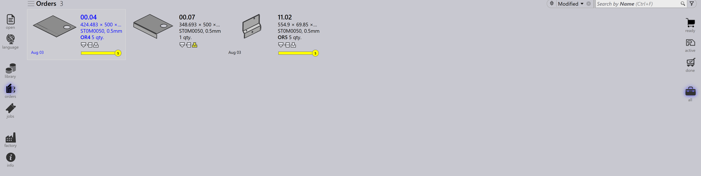

Προβολή παραγγελιών
Οι επιλογές στη δεξιά πλευρά της σελίδας Παραγγελίες αντιπροσωπεύουν διαφορετικές προβολές παραγγελιών ανάλογα με το στάδιο επεξεργασίας τους. Η επιλογή μιας προβολής ενημερώνει τις εμφανιζόμενες παραγγελίες, επιτρέποντάς σας να εστιάσετε σε συγκεκριμένα στάδια της ροής εργασιών.
Ready
Η επιλογή της προβολής Ready εμφανίζει παραγγελίες που έχουν προετοιμαστεί αλλά δεν έχουν ακόμα μετατραπεί σε εργασίες.

-
Εμφανίζει παραγγελίες που είναι έτοιμες για δημιουργία εργασίας.
-
Χρήσιμη για τον εντοπισμό παραγγελιών που εκκρεμούν για επεξεργασία.
Active
Η επιλογή της προβολής Active εμφανίζει παραγγελίες που έχουν μετατραπεί σε εργασίες και βρίσκονται υπό επεξεργασία.
-
Αντιπροσωπεύει παραγγελίες που έχουν ήδη μετακινηθεί στο στάδιο Εργασίας.
-
Βοηθά στην παρακολούθηση παραγγελιών που βρίσκονται σε εκτέλεση.
-
Χρήσιμη για την παρακολούθηση της τρέχουσας παραγωγής.
Done
Η επιλογή της προβολής Done εμφανίζει παραγγελίες που έχουν ολοκληρώσει την επεξεργασία.
-
Εμφανίζει παραγγελίες των οποίων οι σχετικές εργασίες έχουν ολοκληρωθεί.
-
Υποδεικνύει ότι η ροή εργασιών έχει ολοκληρωθεί.
-
Χρήσιμη για ανασκόπηση και τήρηση αρχείου.
All
Η επιλογή της προβολής All εμφανίζει όλες τις παραγγελίες ανεξαρτήτως του σταδίου τους.

-
Παρέχει μια πλήρη επισκόπηση όλων των παραγγελιών.
-
Χρήσιμη για αναζήτηση και διαχείριση σε όλα τα στάδια.
Γραμμή κατάστασης παραγγελίας
Η γραμμή κατάστασης που εμφανίζεται κάτω από κάθε πλακίδιο παραγγελίας υποδεικνύει εάν η παραγγελία συνδέεται με μια εργασία. Υπάρχουν δύο τύποι:
-
Χωρίς γραμμή - η παραγγελία δεν έχει αντιστοιχιστεί σε καμία εργασία.
-
Με γραμμή - η παραγγελία αποτελεί μέρος μιας εργασίας και η γραμμή εμφανίζει την αντίστοιχη κατάσταση της εργασίας όπως αναφέρεται παρακάτω.
| Κατάσταση παραγγελίας | Περιγραφή |
|---|---|
|
Not ready |
|
Ready |
|
Bend Planned |
|
Sheet missing |
|
Bending queue |
|
Cutting Queue |
|
Done(Completed) |